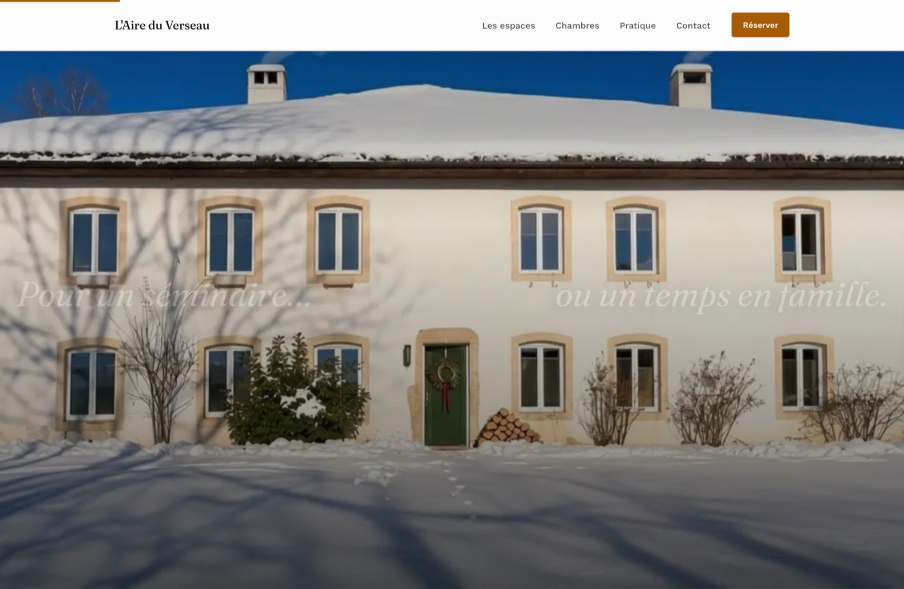
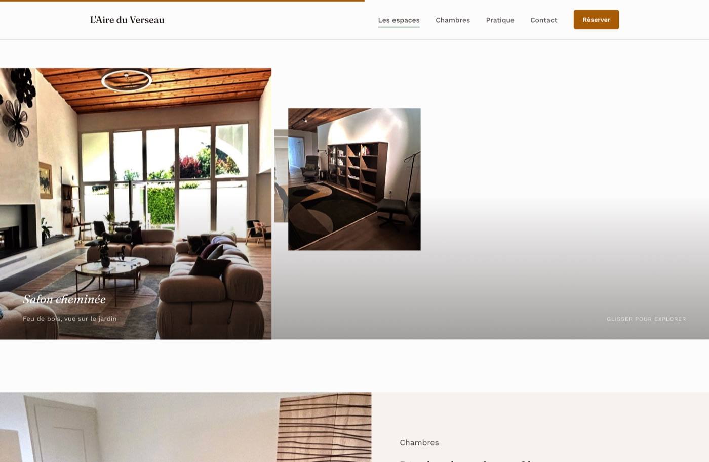

Valérie and Cédric renovated an 18th-century farmhouse in Le Bémont into a venue that works two ways: corporate seminars on weekdays, family and group retreats on weekends, same rooms, same building. Most booking decisions get made without a visit, so the site had to carry the proof of quality a visit would normally provide. We ran the market study, built the identity, and designed and developed the full site: three pieces of one engagement, covered below.
Brand & Digital Design
L'Aire du Verseau
Market study, brand identity and a hand-built website for a 1700 Jura farmhouse fully renovated in 2024, built to convince two very different audiences with one property.
01
Market study.
Positioning the project correctly before designing a single screen, so the scope matched the work and not a guessed flat fee.
Before any mockup, a benchmark of the Swiss-Romandy website market placed this project precisely: from customized templates to full-service agencies, several tiers coexist, each with different work behind it. Every workstream (art direction, dual-audience content architecture, development, accessibility, testing) was then estimated in hours, to cross-check that positioning independently of market comparables.
The research also worked negatively: cataloguing what to avoid. Airbnb-style photo grids, star badges and the cold "solutions/excellence" language of corporate seminar sites shaped the brief as much as any positive reference did, and seminar organizers and families or groups were weighed equally in every structural decision that followed.
Market tiers, mapped
Placing the project correctly meant it wouldn't be sold as a basic one-page freelance job when it called for a full design system. The scope followed from where it sat.
Anti-references ruled out
Listing-site photo grids and star ratings, institutional blue, stock photos of people smiling in meeting rooms: named early enough to steer every later design choice away from them.
Scope, justified by hours
A per-workstream time estimate cross-checked the tariff against the market bracket, so the price reflected the work done, not the page count.
02
Branding & identity.
One scene arbitrates every choice: chalk walls, raw beams and arched glass opening onto Jura pasture. Anything that doesn't belong in that scene doesn't go in the design.
COLOR PALETTE
Chalk White
oklch(0.99 0 0)
Linen
oklch(0.965 .008 60)
Anthracite
oklch(0.2 .012 60)
Honey Wood
oklch(0.55 .13 58)
Pine Green
oklch(0.28 .09 150)
Pine Night
oklch(0.145 .025 150)
The building itself, chalk white and raw wood, carries the background; honey wood and pine green then separate the property's two uses (warmth/families vs. nature/seminars) without ever blending into one another as a gradient. Built entirely in OKLCH rather than hex, so contrast and brightness stay consistent across every shade.
TYPOGRAPHY
A Jura farmhouse, reinvented.
For a seminar, or a family getaway.
MARK
L'Aire du Verseau
No icon, no crest. Just the wordmark in italic Fraunces. The building carries the visual weight everywhere else; the mark stays out of its way.
03
Website creation.
Design, structure, implementation and features: one system, built by hand rather than assembled from a theme.
DESIGN
The hero doesn't play a video. It scrubs one. Scroll position maps to a frame in a 122-image sequence of the façade moving from snow to spring, while two lines of copy answer each other at the edges: "For a seminar…" / "…or a family getaway." Sharp corners throughout (2–4px radius), never the rounded "bento" look that reads as an AI-generated default. The building's own stonework and beams have clean lines, and the interface follows.

STRUCTURE
One page, architected so seminar bookers and families each recognize themselves in the same rooms, with no duplicated "B2B / B2C" sections. The hall that hosts a Tuesday meeting becomes a family's dinner table on the weekend, and the site shows that rather than repeating itself in two versions: story → spaces → rooms → outdoors → practical → contact, one hierarchy for both readers. Pricing tiers collapse into an accordion so the page stays scannable instead of walled off in a table of numbers.
Rooms section (left) and the accordion pricing tiers (right): same page, same hierarchy, two audiences.
IMPLEMENTATION
-
✓
Scroll-scrubbed WebGL hero
A Three.js canvas renders the 122-frame sequence as a scroll-mapped texture, reversible in either scroll direction, with a static-image fallback whenever WebGL isn't available.
-
✓
Custom drag-driven 3D gallery
Room photos float at different depths in a hand-built Three.js scene, panned by drag rather than the scroll wheel so it never fights the page's own scroll: a progressive enhancement over a plain photo grid.
-
✓
Hand-rolled date-range picker
One calendar serves four stay types: a click sets the stay length automatically for the fixed packages, or switches into range-selection mode for open dates. No calendar library involved.
-
✓
Vanilla HTML/CSS/JS, no framework
No build step and no page-builder: full control over markup, and every animation disables itself under a reduced-motion preference.
-
✓
WCAG AA accessibility
Contrast checked on every text/background pairing, full keyboard navigation, and real (not decorative) alt text on every photo.

The 3D room gallery: Three.js, drag-driven, degrades to a plain grid without WebGL.
FEATURES
No native dropdowns for the booking form. Segmented controls handle stay type and use, with the "Departure" field only appearing when the chosen stay needs one. On mobile, the hero isn't scaled down: the farmhouse stays whole, framed by a blurred echo of the same photo so the screen still reads full-bleed instead of letterboxed.
RESULT
A single site that lets one property serve both buyer types directly, built so a visitor reads "rare place, not a generic listing" within the first seconds of scroll, and converts through a direct call or message to the owners rather than a booking engine standing in for them.